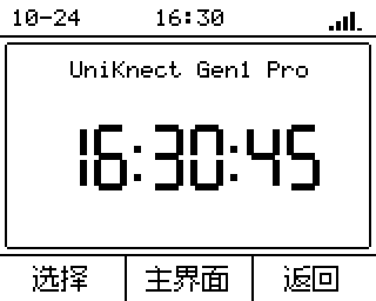

图片由固件实际 C 绘图代码在 ARM 模拟器生成；时间、信号、短信与通话是离线测试夹具，不能视为真实联网状态或实板截图。正常产品不注入这些数据。160×128：状态栏 16 px、功能区 92 px、操作栏 20 px；四方向仅用于排版诊断，默认固定横屏。

功能区左右循环时钟、家人联系、短信查看、信号参数、系统设置；向下到操作栏，向上回原功能区。底栏左右到边缘停止，中键执行。列表下推到最后一项后再次下推进入底栏，详情滚到底后同样操作。每次拨动只执行一次，完全释放后才接受下一次动作；没有长按或连发。
家人联系入口确认只打开联系人列表，列表再次确认才提交真实呼叫。主界面和返回只导航，通话继续后台运行。没有短信数据时显示“暂无短信”；当前尚无模组短信拉取服务，保留类型化短信事件接口。